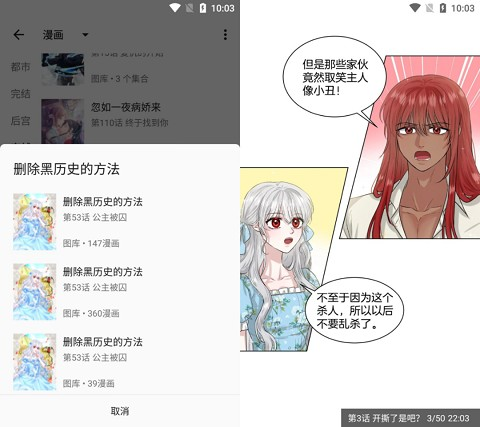

用 myacg 搭一条零摩擦的追漫流水线——从搜漫到离线缓存再到换机迁移全打通
把 myacg 当核心工具串起搜索源管理、离线缓存、夜间模式定时切换和换机迁移，一套流程覆盖日常追漫到设备搬迁的所有环节，少装三个 App，换机省两小时手动配置。
我以前追漫画要跳三个 App
说出来挺丢人的，半年前我手机上同时装着三个漫画阅读器——A 专门看某台连载、B 画质好但更新慢、C 广告少但搜索源不全。每周追番日晚上的流程是：先在 A 刷某台更新、跳 B 补漏、跳 C 去广告版缓存，翻页切 App 至少七八次。更烦的是每月一次的换机焦虑：源库全靠手敲、阅读进度各存各的、缓存目录散落在三个文件夹里，每次迁移都是半小时以上的体力活。
那时候我以为"漫画阅读器就是这个水平"，直到朋友给我推了myacg官网，说它能把所有源站统一进来、换源不丢进度、源库能导出 JSON 直接搬。说实话一开始我半信半疑，抱着从myacg下载装了试试不行就卸的心态，现在三个旧阅读器全卸了，myacg 是我每天打开次数前五的 App。
新流程：myacg 串起了哪几环
现在我的追漫流水线是这样的：主界面搜索框一次搜遍所有启用的搜索源 → 进入详情页先切换源看看哪个章节最全、更新最快 → 选定主力源后点击"缓存"批量下载 → 晚上九点自动切夜间模式翻页 → 每周五检查一次源站有没有失效、失效的从在线仓库更一下。换机那天把源库导出的 JSON 从旧手机拷到新手机 → 新机器安装 myacg → 搜索源管理页一键导入 → 从完整备份恢复书架和进度，前后不到二十分钟。
这条线里 myacg 是核心节点，但上下游接了几个东西：在线源仓库提供持续更新的搜索源配置、本地文件管理器用来导出导入 JSON、系统定时设置只管夜间模式触发时间这一件事。没有复杂脚本，没有云同步账户，全靠 myacg 自带的能力串起来。

最容易断链的两个环节
换源时章节对齐不准
myacg 会尽量把当前章节位置对齐到新源的章节列表，但不同源的章节编号偶尔会对不上——比如 A 源把番外算在正篇里排到第 102 话，B 源番外单独分组只排到第 98 话，切过去之后阅读器可能跳到番外而不是我该看的那一话。我的做法是：切换源之后先快速扫一眼章节列表头部和尾部，确认当前高亮的章节就是我应该继续看的那一话，不对就手动拖一下章节列表点进去。这个检查只需要两三秒，但能避免翻了好几章才发现看串了的尴尬。
导出导入的源会不会重复
如果你在新手机上已经装了一些搜索源，然后再导入旧手机的 JSON，两套源会合并在一起。同名的源可能出现两个、一个启用一个禁用，或者干脆规则冲突导致失效。我的处理是：换机时先把新手机上 myacg 里所有搜索源清到零，再装旧机器导出的 JSON——这样进来的源全都是我原来配好的那套，没有冲突。如果是给朋友分享源库，我会先问清楚他手机上有没有自己加过源，有的话让他先手动清一遍再导入。关于导出导入的完整参数和版本兼容说明，去myacg文档翻一下就能找到。
效果和边界
实话说省下来的时间量出来的：旧流程每周追漫日在三个 App 之间跳七八次，现在一次搜索直接覆盖所有源；换机从半小时缩减到二十分钟（其中 JSON 拷贝其实只是两秒，主要是完整备份恢复书架和进度）；夜间模式不用每晚手动按两次，设一次时间就再也不用管。
但这套流程也有边界。如果某个漫画只有一个可用源，换源环节就省了——画质差、加载慢也只能扛着；不同大版本之间的搜索源规则可能有格式变化，v1.4.8 导出的 JSON 在 v1.5.1.2 上导入大概率没问题，但跨三四个版本的话部分源可能失效，失效了从在线仓库手动更一下就行，不是批量失效；如果你用的是冷门机型，偶尔会遇到夜间模式文字显示异常，这个和 myacg 本身无关，是机型适配的问题。
总的来说这条流水线跑下来三个月没出过什么大问题，唯一一次是某源站突然整站挂了，我就在阅读器里切到另一个源继续看，前后五秒钟。这就是我想要的追漫体验：源站多了不用装新 App、某个源挂了切到下一个、换机不用重新配置一遍、晚上翻页眼睛不累，其他的事交给 myacg 自己处理。想自己搭这套流程的话，相关的源配置和使用笔记我同步到了GitHub、Gitee 和 GitCode 上，按需取用就行。